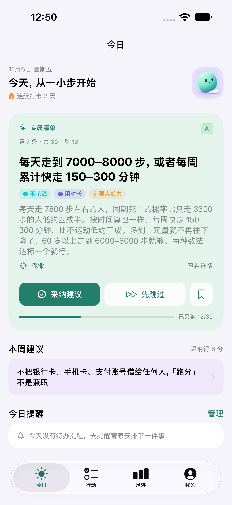
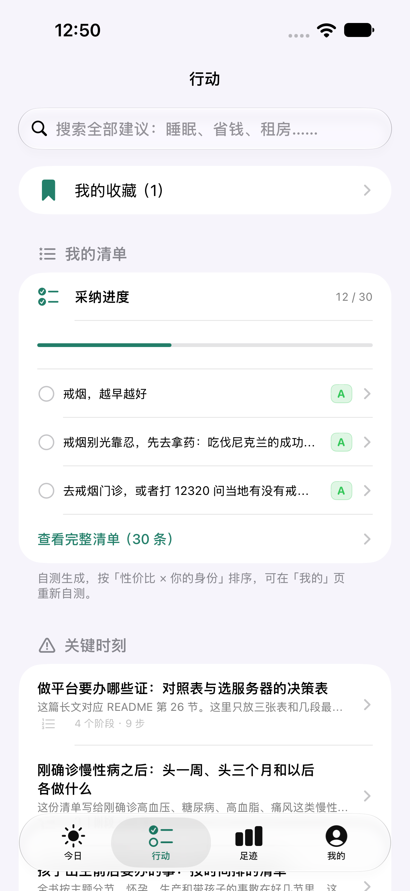
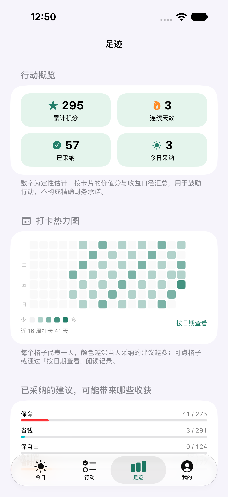
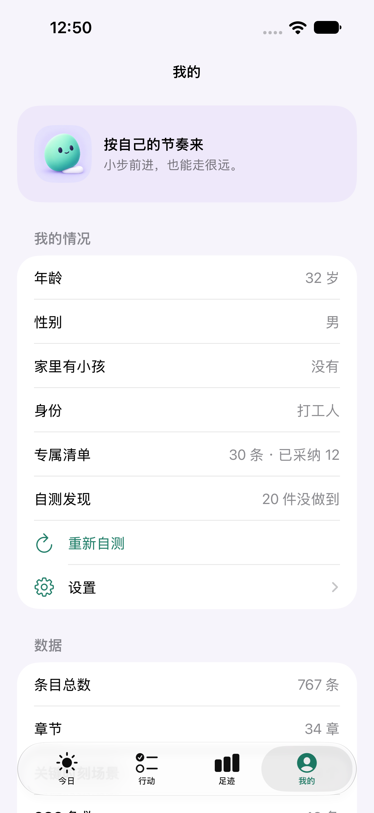

从你的情况出发
通过基本情况与自测，整理一份专属清单。可以跳过问题，也可以日后重新梳理。
LIFE ACTION GUIDE · 每天做一件值得的事
不用一下子改变人生。
从一条有依据、做得到的建议开始。
为 iPhone 设计 · 离线可用 · 资料保存在本机
把有依据的建议，变成今天的一步
先找到一件值得做的事，
再用适合自己的节奏行动。
自测清单 / 提醒管家
生活没有统一答案。
这是一份可以随身查阅的行动指南。
通过基本情况与自测，整理一份专属清单。可以跳过问题，也可以日后重新梳理。
换工作、换城市、家庭应急……将相关内容整理在关键时刻场景里，离线也能阅读。
收藏值得回看的建议，设置自己的提醒，在「足迹」中回顾已采纳的内容。
看看你的下一步，在哪里开始
从今日的一条建议，到长期留下的足迹。
把行动安排在你自己的节奏里。

看清建议的内容与成本，再决定采纳、先跳过，或收藏起来。

回看专属清单，用关键词搜索建议，或按生活场景查找步骤。

通过行动概览和打卡热力图，回顾已经采纳的建议与日常记录。

查看基本情况和自测结果。生活发生变化时，可以重新自测。
App 实际界面 · 截图中的资料与行动记录为演示数据 · 点击图片可查看完整截图
不急着改变所有事
这份指南可以慢慢读，也可以在遇到问题时随手查。你不需要一次完成整张清单。
填写基本情况与自测，生成专属清单。暂时不想填写，也可以跳过。
阅读行动要点、成本与证据来源。采纳适合的建议，把想再看的内容收藏起来。
回看行动记录，为需要记住的事务设置提醒，再按自己的节奏继续。
开始之前，你可能想知道
不需要。你可以直接阅读主要内容，基本情况与自测也可以跳过，之后再按需要填写。
主要知识内容可以离线阅读。打开外部参考资料、官网或发送反馈邮件时，需要网络连接。
个人资料、自测答案和行动记录保存在设备本地。你可以在 App 设置中导出或恢复备份，也可以清除本机资料。了解隐私政策 ↗
App 正在准备上架，公开下载入口将在上线后更新。使用或测试方面的问题，可以通过帮助与反馈页面联系开发者。
由你决定，怎样生活
你的画像、自测和记录保存在本机。
无需注册账号，也能开始使用。